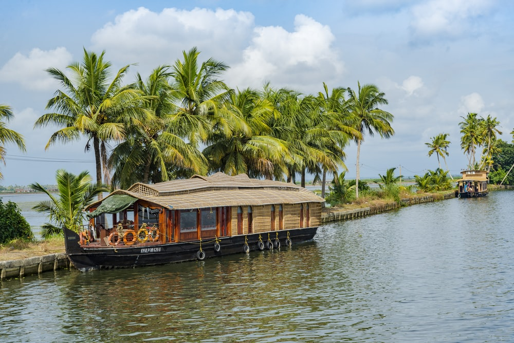

×
KERALA
God's own Country
-
Kasaragod
The district is situated at the northern tip of Kerala with the rich biodiversity of Western Ghats. It was a part of the Kannur district of Kerala until 24 May 1984. The district is bounded by Dakshina Kannada district to the north, Western Ghats to the northeast, Kodagu district to the southeast, Kannur district to the south, and Arabian Sea to the west. Kasaragod district has the maximum number of rivers in Kerala - 12
Know More -
Kannur
The Kannur Municipal Corporation is the sixth-largest urban local body in the state and Kannur Cantonment is the only Cantonment Board in Kerala. Indian Naval Academy at Ezhimala is the Asia's largest, and the world's third-largest, naval academy. Muzhappilangad beach is the longest Drive-In Beach in Asia and is featured among the top 6 best beaches for driving in the world in BBC article for Autos. Kannur district is home to some forts which include St. Angelo Fort, and Tellicherry Fort. The district was established in 1957. Kannur is the sixth-most urbanised district in Kerala, with more than 50% of its residents living in urban areas
Know More -
Kozhikode
Kozhikode, also known in English as Calicut, is home to the second-largest metropolitan city in the State of Kerala. It is also the 19th largest in the country with a population of two million according to the 2011 census. It was the capital of the British-era Malabar district. In antiquity and the medieval period, Kozhikode was dubbed the City of Spices for its role as the major trading point for Indian spices. The port at Kozhikode acted as the gateway to medieval South Indian coast for the Chinese, the Arabs, the Portuguese, the Dutch and finally the British.
Know More -
Malappuram
The district was formed on 16 June 1969, spanning an area of about 3,554 km2 (1,372 sq mi). It is the third-largest district of Kerala by area, as well as the largest district in the state bounded by Western Ghats and Arabian Sea to the two sides. Malappuram is the third major contributing district to the Gross State Domestic Product of Kerala as of 2019, after Ernakulam and Thiruvananthapuram. It is the most populous district of Kerala, which is home to around 13% of the total population of the state.
Know More -

Wayanad
The district was formed on 1 November 1980 as the 12th district in Kerala by carving out areas from Kozhikode and Kannur districts. About 885.92 sq.km of area of the district is under forest and also a major portion of the district is at higher altitudes. Wayanad has three municipal towns—Kalpetta, Mananthavady and Sulthan Bathery. There are many indigenous tribals in this area.The Kabini River, which is a tributary of Kaveri River, originates at Wayanad. Wayanad district is known for its natural Gold fields, which is also seen in other parts of Nilgiri Biosphere Reserve. Chaliyar river, which is the fourth longest river of Kerala, originates in Wayanad plateau. The historically important Edakkal Caves are located in Wayanad district
Know More -
Thrissur
Historically known as Thrishivaperur (the town of the Sacred Shiva), Thrissur is the cultural capital of Kerala. The architect of Thrissur Town is popularly recognized as Raja Rama Verma, also known as Shaktan Thampuran, as his reign was characterized by firm and vigorous administration. The early political history of the District is interlinked with that of the Cheras of the Sangam age, who ruled over vast portions of Kerala with their capital at Vanchi. The District can claim to have played a part in fostering the trade relations between Kerala and the outside world in the ancient and medieval period. Kodungalloor, which had the distinction of being the "Premium Emporium of India", gave shelter to the Jewish, Muslim and Christian communities
Know More -

Palakkad
Celebrated as the Granary of Kerala, Palakkad is a vast stretch of fertile plains interspersed with hills, rivers, mountain streams and forests. The gateway to Kerala from the north, a 40 kilometre break in the mountains known as the Palakkad Gap gives access to this land situated at the foot of the Western Ghats. The pass acts as a corridor between Kerala and the neighbouring Tamil Nadu and played a key role in the trade relations between the east and west coasts of peninsular India. Deriving its name from the Malayalam words Pala (Alsteriascholaris) and Kadu (forest), this place was once a stunning expanse of forest covered with the sweet-scented flowers of the Pala tree.
Know More -

Alappuzha
Affectionately nicknamed the 'Venice of the East' by travellers from across the world, Alappuzha is a district of immense natural beauty. Embraced by the Arabian Sea in the west and a network of lakes, lagoons and freshwater rivers criss-crossing it, this backwater country is home toa vibrant animal and avian life. By virtue of its proximity to the sea, the town has always carved out an exclusive place for itself in the maritime history of Kerala.
Know More -

Ernakulam
Ernakulam is a sprawling metropolis that beautifully combines its natural wonders with providing a base for a majority of the State’s business enterprises. Flanked by the Arabian sea, it is easily among the most visited locations in Kerala. It is an extremely important commercial centre but also has a plethora of destinations for tourists to enjoy. The city of Kochi, with its fine natural harbour, is the undisputed crown jewel of the district. From historic locations that transport you to a time when it acted as the commercial hub of the legendary Spice Route to exotic trips on boats where one can simply relax and soak in the weather, Kochi never disappoints.
Know More -

Idukki
Idukki is Kerala's second largest district and has been blessed with numerous natural wonders. The high valleys and hill ranges of this landlocked region are fed by three major rivers - Periyar, Thalayar and Thodupuzhayar and their tributaries. Its forest still hosts many tribes and over half of the terrain is still covered with forests. People love going to the gigantic arch dam for getting its mesmerising view. Blessed with a wide range of trekking trail, each of them offers a spectacular view of the valley below and ranges above of Idukki. The place is also renowned for its exotic flora and fauna and one can come across many rare species while visiting Idukki.
Know More -
Kottayam
Kottayam district is famous for its rich heritage and literary tradition. It is renowned for its spice and rubber trade. Cradled by the backwaters and the Western Ghats, it is epitomised by its stretches of vast greenery, paddy fields and huge rubber plantations. Over five of the State’s leading newspaper publications originate from Kottayam. About four-fifth of books published in the State come from here as well. From trekking hotbeds like Nadukani and Kottathavalam to the rare avian life on display at the Kumarakom Bird Sanctuary, this district encompasses everything that God’s Own Country is famous for.
Know More -
Pathanamthitta
A hilly province of pristine splendour, the district of Pathanamthitta is hailed as the headquarters of pilgrim worship in Kerala. Three rivers course through its prosperous terrains comprising natural divisions of the lowlands, the midlands and the highlands. Interspersed with temples, rivers, mountain ranges and coconut groves, more than fifty per cent of the total area of this region is covered by forests. Pathanamthitta has been dubbed a Heritage Village as it attracts visitors from all over the world for its spectacular water fiestas, religious shrines and cultural training centres
Know More -
Kollam
One of the premier trade capitals of the Old World, Kollam is the centre of the country’s cashew trading and processing industry. Extolled by Marco Polo and Ibn Batuta in glowing terms, this was once a famous port of international spice trade. This historic town is home to the celebrated Ashtamudi Lake, making it a gateway to the breath-taking backwaters of Kerala.
Know More -
Thiruvananthapuram
Thiruvananthapuram District is the southernmost district in the Indian state of Kerala. The district was created in 1949, with its headquarters in the city of Thiruvananthapuram, which is also Kerala's capital. It is also the IT capital of the State. Thiruvananthapuram District (IPA: , is the southernmost district in the Indian state of Kerala. The district was created in 1949, with its headquarters in the city of Thiruvananthapuram, which is also Kerala's capital. It is also the IT capital of the State which house the Technopark. The district is known for its popular tourist destinations in the form of beaches and heritage sites
Know More